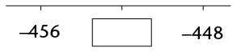
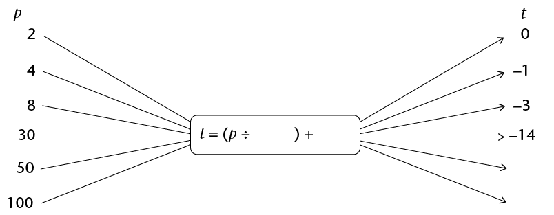

Term revision and assessment
Revision
Show all your steps of working.
Whole numbers
-
- Write both 300 and 160 as products of
prime factors.
- Determine the HCF and LCM of 300 and
160.
- Write both 300 and 160 as products of
prime factors.
- Tommy, Thami and Timmy
are given birthday money by their grandmother in the ratio of
their ages. They are turning 11, 13 and 16 years old,
respectively. If the total amount of money given to all three
boys is R1 000, how much money does Thami get on his
birthday?
- Tshepo and his family
are driving to the coast on holiday. The distance is 1 200 km
and they must reach their destination in 12 hours. After 5
hours, they have travelled 575 km. Then one of their tyres
bursts. It takes 45 minutes to get the spare wheel on, before
they can drive again. At what average speed must they drive the
remainder of the journey to reach their destination on
time?
- The number of teachers
at a school has increased in the ratio 5 : 6. If there used to
be 25 teachers at the school, how many teachers are there
now?
- ABC for Life needs to
have their annual statements audited. They are quoted R8 500 +
14% VAT by Audits Inc. How much will ABC for Life have to pay
Audits Inc. in total?
- Reshmi invests R35 000
for three years at an interest rate of 8,2% per annum.
Determine how much money will be in her account at the end of
the investment period.
- Lesebo wants to buy a
lounge suite that costs R7 999 cash. He does not have enough
money and so decides to buy it on hire purchase. The store
requires a 15% deposit up front, and 18 monthly instalments of
R445.
- Calculate the deposit that Lesebo must
pay.
- How much extra does Lesebo pay because
he buys the lounge suite on hire purchase, rather than in
cash?
- Calculate the deposit that Lesebo must
pay.
- Consider the following
exchange rates table:
South African Rand
1.00 ZAR
inv. 1.00 ZAR
Euro
0.075370
13.267807
US Dollar
0.098243
10.178807
British Pound
0.064602
15.479409
Indian Rupee
5.558584
0.179902
Australian Dollar
0.102281
9.776984
Canadian Dollar
0.101583
9.844200
Emirati Dirham
0.360838
2.771327
Swiss Franc
0.093651
10.677960
Chinese Yuan Renminbi
0.603065
1.658195
Malaysian Ringgit
0.303523
3.294646
- Write down the amount in rand that needs
to be exchanged to get 1 Swiss franc. Give your answer to the
nearest cent.
- Write down the only currency for which
an exchange of R100 will give you more than 100 units of that
currency.
- Ntsako is travelling to Dubai and
converts R10 000 into Emirati dirhams. How many dirhams does
Ntsako receive (assume no commission)?
- Write down the amount in rand that needs
to be exchanged to get 1 Swiss franc. Give your answer to the
nearest cent.
Integers
Don't use a calculator for any of the questions in this section.
- Write a number in each
box to make the calculations correct.
- ☐ + ☐ = -11
- ☐ - ☐ = -11
- Fill <, > or =
into each block to show the relationships.
- -23 ☐ 20
- -345 ☐ -350
- \(4 - 3\) ☐ \(3 - 4\)
- \(5 - 7\) ☐ \(-(7 - 5)\)
- \(-9 \times 2\) ☐ \(-9 \times -2\)
- \( -4 \times 5\) ☐ \(4 \times -5\)
- \( -10 \div 5 ☐ -10 \div -2 \)
- \(-15 \times -15\) ☐ 224
- Follow the pattern to
complete the number sequences.
- 8; 5; 2;☐
- 2; -4; 8;☐
- -289; -293; -297;☐
- Look at the number
lines. In each case, the missing number is halfway between the
other two numbers. Fill in the correct values in the boxes.
-

-

-
- Calculate the following:
- \( -5 - 7\)
- \( 7 - 10\)
- \( 8-(-9)\)
- \( (-5)(-2)(-4)\)
- \( 5 + 4 \times 2\)
- \( \frac{(\sqrt{4})(-2)^2}{-4}\)
- \( \frac{-(-3)^3\sqrt[3]{125}}{(-9)(3)}\)
- \( \frac{\sqrt[3]{-64}}{-3-1}\)
- \( -5 - 7\)
-
- Write down two numbers that multiply
to give -15. (One of the numbers must be positive and the other
negative.)
- Write down two numbers that add to 15.
One of the numbers must be positive and the other negative.
- Write down two numbers that multiply
to give -15. (One of the numbers must be positive and the other
negative.)
- At 5 a.m., the
temperature in Kimberley was -3 °C. At 1 p.m., it
was 17 °C. By how many degrees had the temperature
risen?
- A submarine is 220 m
below the surface of the sea. It travels 75 m upwards. How far
below the surface is it now?
Exponents
You should not use a calculator for any of the questions in this section.
- Write down the value of
the following:
- \((-3)^3\)
- \(-5^2\)
- \( (-1)^{200}\)
- \( (10^2)^2\)
- \((-3)^3\)
- Write the following numbers in
scientific notation:
- 200 000
- 12,345
- 200 000
- Write the following numbers in
ordinary notation:
- \(1,3 \times 10^2 \)
- \(7,01 \times 10^7 \)
- \(1,3 \times 10^2 \)
- Which of the following numbers
is bigger: \(5,23 \times 10^{10}\) or \(2 ,9 \times 10^{11}\)?
- Simplify the
following:
- \(2^7 \times 2^3\)
- \(2x^3 \times 4x^4\)
- \((-8y^6) \div (4y^3)\)
- \((3x^8)^3\)
- \( (2x^5)(0.5x^{-5})\)
- \( (-3a^2b^3c)(-4abc^2)^2\)
- \( \frac{(2xy^2z^3)(-5y^2z)^2}{20xy^8z^4} \)
- \(2^7 \times 2^3\)
- Write down the values
of each of the following:
- \((0,6)^2\)
- \((0,2)^3\)
- \((\frac{1}{2})^5\)
- \(\sqrt{\frac{1}{4}}\)
- \(4\sqrt{\frac{9}{64}}\)
- \(\sqrt[3]{0.001}\)
- \((0,6)^2\)
Numeric and geometric patterns
- For each of the
following sequences, write the rule for the relationship
between each term and the following term in words. Then use the
rule to write the next three terms in the sequence.
- \(12; 7; 2;\text{______};\text{______};\text{______}\)
- \( -2; -6; -18;\text{______};\text{______};\text{______}\)
- \(100; -50; 25;\text{______};\text{______};\text{______}\)
- \(3; 4; 7; 11;\text{______};\text{______};\text{______}\)
- \(12; 7; 2;\text{______};\text{______};\text{______}\)
- In this question, you
are given the rule by which each term of the sequence can be
found. In all cases, \(n\) is the position of the
term.
Determine the first three terms of each of the sequences. (Hint: Substitute \(n = 1\) to find the value of the first term.)
- \(n \times 4\)
- \(n\times 5 - 12\)
- \(2 \times n^2\)
- \(3n \div 3 \times -2\)
- \(n \times 4\)
- Write down the rule by
which each term of the sequence can be found (in a similar
format to those given in question 2, where n is the position of the
term).
- \(2; 4; 6; ...\)
- \(-7; -3; 1; ...\)
- \(2; 4; 8; ...\)
- \( 9; 16; 23; ...\)
- \(2; 4; 6; ...\)
- Use the rules you have
found in question 3 to find the value of the 20th term of the
sequences in questions 3(a) and 3(b).
-
- Find the relationship
between the position of the term in the sequence and the value
of the term, and use it to fill in the missing values in the
tables.
-
Position in sequence
1
2
3
4
25
Value of the term
-8
-11
-14
-
Position in sequence
1
2
3
Value of the term
1
3
9
243
19 683
-
- The image below shows a
series of patterns created by matches.

- Write in words the rule that describes
the number of matches needed for each new pattern.
- Use the rule to determine the missing
values in the table below, and fill them in.
Number of the pattern
1
2
3
4
20
Number of matches needed
4
7
151
- Write in words the rule that describes
the number of matches needed for each new pattern.
Functions and relationships
- Fill in the missing
input values, output values or rule in these flow diagrams.
Note that \(p\) and
\(t\) are integers.
-

-

-

-
- Consider the values in
the following table. The rule for finding \(y\) is: divide \(x\) by -2 and subtract 4. Use the
rule to determine the missing values in the table, and write
them in.
x
-2
0
2
5
y
-1
-3
-4
48
- Consider the values in
the following table:
\(x\)
-2
-1
0
1
2
4
15
\(y\)
1
3
5
7
9
61
- Write in words the rule for finding the
\(y\)-values in the
table.
- Use the rule to determine the missing
values in the table, and write them in.
- Write in words the rule for finding the
\(y\)-values in the
table.
Algebraic expressions
- Look at this algebraic
expression: \(5x^3 - 9 + 4x - 3x^2\).
- How many terms does this
expression have?
- What is the variable in
this expression?
- What is the coefficient of
the \(x^2\)
term?
- What is the constant in
this expression?
- Rewrite the expression so that the terms
are in order of decreasing powers of \(x\).
- How many terms does this
expression have?
- In this question, \(x=6\) and \(y = 17\). Complete
the rules to show different ways to determine \(y\) if \(x\) is known. The first way is
done for you:
Way 1: Multiply x by 2 and add 5. This can be written as \(y = 2x + 5\)
- Way 2: Multiply \(x\) by ______ and then subtract ______. This can be written as
- Way 3: Divide \(x\) by ______ and then add ______ . This can be written as
- Way 4: Add ______ to \(x\), and then multiply by ______ . This can be written as
- Way 2: Multiply \(x\) by ______ and then subtract ______. This can be written as
- Simplify:
- \(2x^2 + 3x^2\)
- \(9xy -12xy\)
- \(3y^2 - 4y + 3y - 2y^2\)
- \(9m^3 + 9m^2 + 9m^3 - 3\)
- \(2x^2 + 3x^2\)
- Calculate the value of the
following expressions if \(a = -2; b = 3; c = -1 \text{ and } d = 0:\)
- \(abc\)
- \(-a^2\)
- \((abc)^d\)
- \(a + b- 2c\)
- \((a + b)^{10}\)
- \(abc\)
Algebraic equations
- Write equations that represent
the given information:
- Nandi is \(x\) years old. Shaba, who is
\(y\) years old, is three years older than Nandi.
- The temperature at Colesberg during the
day was \(x\)°C. But at night, the temperature dropped by 15
degrees to reach -2°C.
- Nandi is \(x\) years old. Shaba, who is
\(y\) years old, is three years older than Nandi.
- Solve the following equations
for \(x\):
- \(x + 5 = 2\)
- \(7 - x = 9\)
- \(3x - 1 = -10\)
- \(2x^3 = -16\)
- \( 2^x = 16\)
- \( 2(3)^x = 6\)
- \(x + 5 = 2\)
- If \(3n - 1 = 11\), what is the value
of \(4n\)?
- If \(c = a + b\) and \(a + b + c = 16\) , determine the value of
\(c\).
-
- If \(2a + 3 = b\), write down values for \(a\) and \(a\) that will make the equation
true.
- Write down a different pair of values to
make the equation true.
- If \(2a + 3 = b\), write down values for \(a\) and \(a\) that will make the equation
true.
Assessment
In this section, the numbers in brackets at the end of a question indicate the number of marks the question is worth. Use this information to help you determine how much working is needed. The total number of marks allocated to the assessment is 60.
- The profits
of GetRich Inc. have decreased in the ratio 5 : 3 due to the
recession in the country. If their profits used to be R1 250
000, how much are their profits now?
- Which car
has the better rate of petrol consumption: Ashley's car, which
drove 520 km on 32ℓ of petrol,
or Zaza's car, which drove 880 km on 55ℓ of petrol? Show all your
working.
- Hanyani
took out a R25 000 loan from a lender that charges him 22%
interest each year. How much will he owe in one year's time?
- Consider the following
exchange rates table:
South African Rand
1.00 ZAR
inv. 1.00 ZAR
Indian Rupee
5.558584
0.179902
Australian Dollar
0.102281
9.776984
Canadian Dollar
0.101583
9.844200
Emirati Dirham
0.360838
2.771327
Chinese Yuan Renminbi
0.603065
1.658195
Malaysian Ringgit
0.303523
3.294646
Chen returns from a business trip to Malaysia with 2 500 ringgit in his wallet. If he changes this money into rand in South Africa, how much will he receive?
- Fill <, > or =
into the block to show the relationship between the number
expressions:
- \(6 - 4\) ☐ \(4 - 6\)
- \(2 \times -3\) ☐ \(-3^2\)
- Look at the
number sequence below. Fill in the next term into the
block.
\(-5; 10; -20\);☐
- Calculate the following:
- \( (-4)^2 - 20\)
- \(\sqrt[3]{-8} + 14 \ \div 2\)
- \( (-4)^2 - 20\)
- Julius
Caesar was a Roman emperor who lived from 100 BC to 44 BC. How
old was he when he died?
-
- Write down two numbers
that divide to give an answer of -8. One of the numbers must be
positive, and the other negative.
- Write down two numbers that
subtract to give an answer of 8. One of the numbers must be
positive and the other negative.
- Write down two numbers
that divide to give an answer of -8. One of the numbers must be
positive, and the other negative.
- Write the
following number in scientific notation: 17 million.
- Which of
the following numbers is bigger: \(3,47 \times 10^{21} \text{ or }7,99 \times
10^{20}\)?
- Simplify the
following, leaving all answers with positive exponents:
- \( 3^7
\times 3^-2\)
- \((-12y^8) \div
(-3y^2)\)
- \(
\frac{(3xy^2z^3)(-yz)^2}{15x^5y^4z^7}\)
- \( 3^7
\times 3^-2\)
- Write down the values
of each of the following:
- \((0.3)^3\)
- \( 8
\sqrt{\frac{25}{16}} \)
- \((0.3)^3\)
- Consider the following number
sequence: \(2; -8; 32; ...\)
- Write in words the rule by
which each term of the sequence can be found.
- Write the next three terms in
this sequence.
- Write in words the rule by
which each term of the sequence can be found.
- The picture below shows a
series of patterns created by matches.

- Write a formula for the rule
that describes the relationship between the number of matches
and the position of the term in the sequence (pattern number).
Let \(n\) be the
position of the term.
- Use the rule to determine the
values of \(a\) to \(c\) in the following table:
Number of the pattern
1
2
3
4
15
c
Number of matches needed
8
15
22
a
b
148
- Write a formula for the rule
that describes the relationship between the number of matches
and the position of the term in the sequence (pattern number).
Let \(n\) be the
position of the term.
- Consider the values in
the following table:
x
-2
-1
0
1
2
5
12
y
-7
-4
-1
2
5
98
- Write in words the rule for
finding the \(y\)-values in the table.
- Use the rule to determine the
missing values in the table, and fill them in.
- Write in words the rule for
finding the \(y\)-values in the table.
- . Simplify:
- \(2z^2 - 3z^2\)
- \( 8y^2 - 6y + 4y - 7y^2\)
- \(2z^2 - 3z^2\)
- Determine
the value of \(2a^2 - 10\) if \(a = -2\).
- If \(c + 2d = 27\), give the value of the
following:
- \(2c + 4d\)
- \(\frac{c +
2d}{-9}\)
- \(\sqrt[3]{c + 2d}\)
- \(2c + 4d\)
- Solve the
following for \(x\): (5)
- \(-x - 11\)
- \(2x -5 = - 11\)
- \(4x^3 = 32\)
- \(-x - 11\)